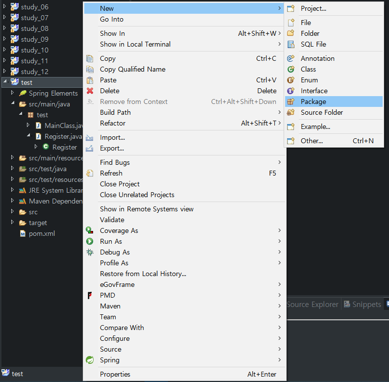
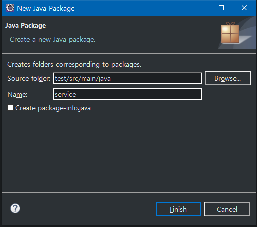
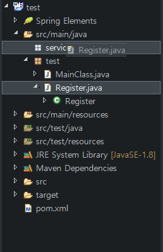
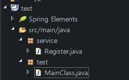
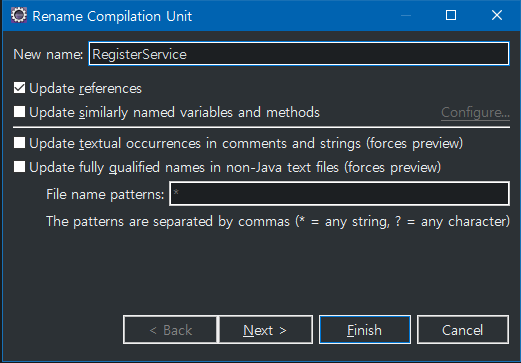
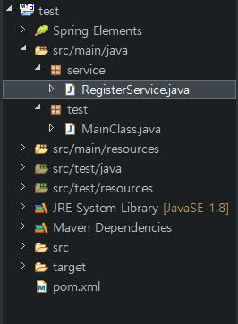
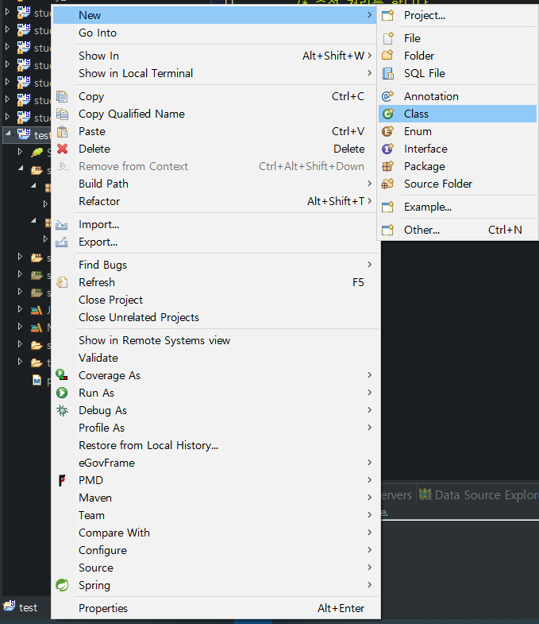
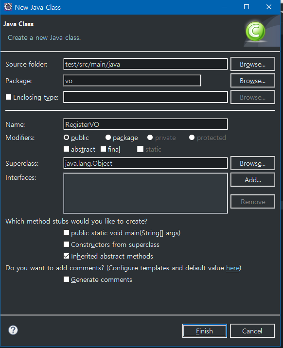

Spring 개발일지(5) - 의존성 주입(DI)
Spring 개발은 여러 절로 구성되어 있습니다.
- Spring 개발(1) - 기본적인 상식
- Spring 개발(2) - 개발환경 구축
- Spring 개발(3) - 스프링 프로젝트 생성
- Spring 개발(4) - 자바로 스프링 개발
- Spring 개발(5) - 의존성 주입(DI)
설명하기에 앞서
안녕하세요. 풀스택 개발자를 위해 달려나가는 박종선 입니다.
이번 블로그 내용에서는
Spring DI(Dependecy Injection)을 알아볼 예정입니다.
천천히 시간을 가지면서 이해해보도록 합시다. 그러면 시작해보도록 하죠!
DI(Dependecy Injection)란
의존 하는 객체를 Spring Container 혹은 외부에 넘겨주는 것이며 우리 말로는 의존성 주입이라고 의미합니다. 이렇게 생성된 객체들은 Container를 통해 한번에 불러올 수 있다는 장점이 있습니다.
간단히 살펴본 것으로써 이해하기는 힘든 의미인 것은 사실입니다. 왜 객체를 외부에 넘겨주는 작업을 하며, 새로운 개념을 배워야 하는 것일까요? 그래도 한번 새로운 예제를 보면서 개념을 이해하다보면 이러한 부분 떄문에 DI를 사용하는구나… 라고 공감하실 수 있습니다. 그러면 살펴보시죠!
DI를 위한 기초 작업[패키지 분리]
기존에 우리가 쓰던 프로젝트를 이용하여 실습해보도록 하죠!! 없으신 분들은 아래 내용을 참고하셔도 좋고, 직접 하고 싶으시다면 여기를 참고해주시기 바랍니다.
자.. 저번 시간에는 가상으로 회원가입을 만들었으며, 이러한 회원가입은 상상의 나래를 펼쳐서 만들어보았습니다. DataBase에 넣지도 않았으며, 값의 입력도 없었었죠??
지금도 Database는 사용하지 않을 것이지만, 그래도 일정한 틀이 있어야 하기 떄문에 VO도 만들어 보고, 값을 Store도 해보겠습니다.
그전에
기능들을 분리하기 위해 패키지를 나누어서 설정해보도록 하겠습니다. 이것은 차 후의 프로젝트에 적응을 하기 위한필수 사항입니다!!

패키지를 생성하기 위해
src/main/java에 오른쪽 마우스 누르시고New -> Package을 누릅니다.

패키지 명은
Service를 입력하고 선택합니다.
참고로 Service 패키지는DataBase와 연동하여 처리를 할 때 자주 사용하는 패키지의 의미를 뜻합니다.
 
그리고 우리가 만들었던 Register.java 파일을 Service 패키지로
Move합시다.

F2를 눌러서 이름 변경을 해봅시다. 이름은
Register.java -> RegisterService.java로 바꾸도록 하죠.

자.. 일단 기존에 있는 코드들의 기초적인 공사는 끝난 거 같습니다. 그러면
VO객체를 만들고Service를 수정하여 좀 더 깊게 들어가보도록 하죠.
예제로 확인하는 Spring DI

자.. 일단 기존에 있는 코드들의 기초적인 공사는 끝난 거 같습니다. 그러면 VO객체를 만들고 Service를 수정하여 좀 더 깊게 들어가보도록 하죠.

자.. 일단 기존에 있는 코드들의 기초적인 공사는 끝난 거 같습니다. 그러면 VO객체를 만들고 Service를 수정하여 좀 더 깊게 들어가보도록 하죠.
마무리
이렇게 이클립스로 간단하게 프로젝트를 생성하여 자신만의 spring 프로젝트를 생성하는 법을 배웠습니다.
하지만 왜 스프링을 사용하는 것인지 아직까지 의문 투성인 부분이 많습니다.
다음에는 스프링을 왜 사용하는 것인지, 그 의문점을 파악하기 위해 직접 스프링 프로젝트를 체험해보는 시간을 갖도록 하겠습니다.